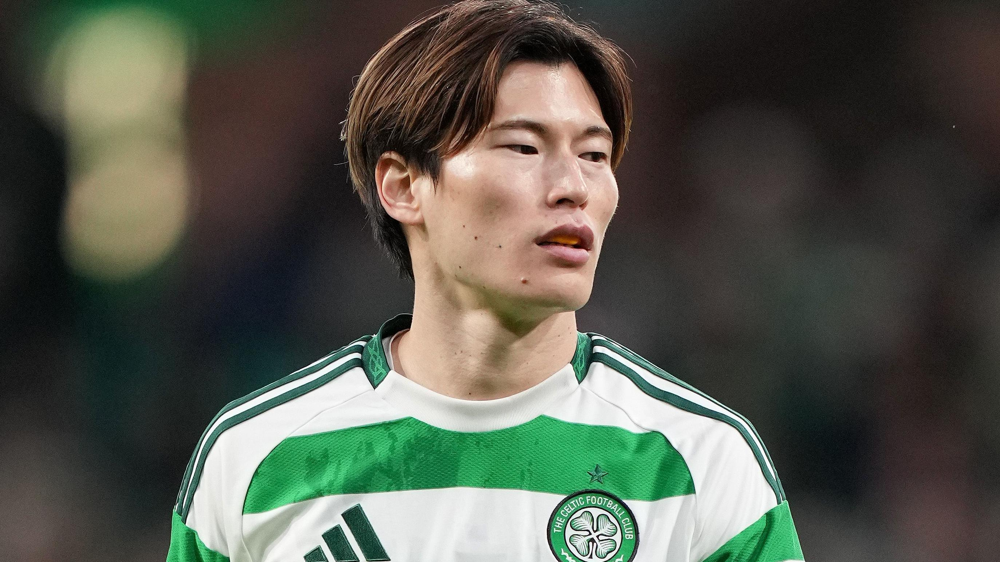

Actualidad del Club

Kyogo Furuhashi: Renovado

Thomas Gravesen en el chiringuito: "El año pasado nos quedamos cerca de campeonar, este año será diferente."
Nuestros Capitanes

Furuhashi
Bissouma
Cáceres